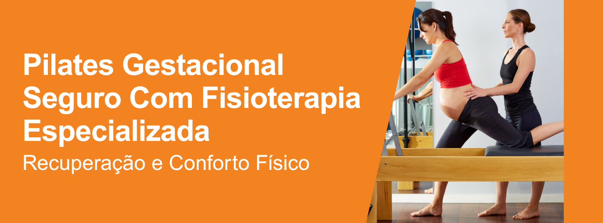
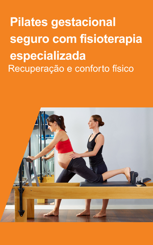
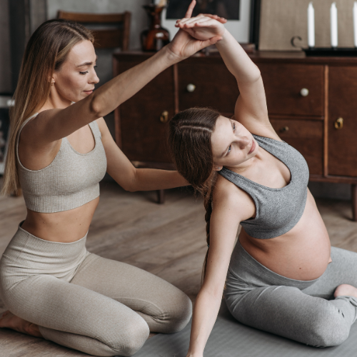
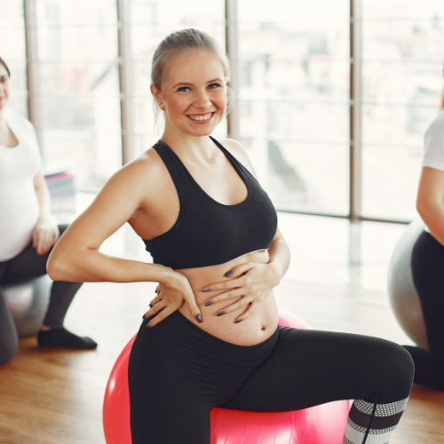
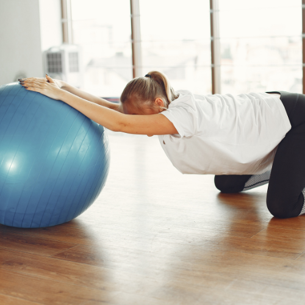

Pilates gestacional seguro com
fisioterapia especializada
Acompanhamento fisioterapêutico especializado garante exercícios adaptados
a cada trimestre, respeitando rigorosamente as mudanças corporais. O método
trabalha a postura, alivia dores lombares, melhora a circulação e promove
equilíbrio, assegurando uma gestação mais confortável, segura e consciente.

Fortalecimento muscular essencial para o parto
Exercícios focados no assoalho pélvico e no centro do corpo
preparam toda a musculatura para o trabalho de parto. O controle
respiratório aliado ao fortalecimento profundo facilita a dilatação,
reduz complicações e oferece maior autonomia durante o momento
do nascimento.

Recuperação e conforto físico no pós-parto
Após o nascimento, o Pilates fisioterapêutico auxilia na
recuperação dos tecidos, no reposicionamento da coluna e
no restabelecimento da força abdominal. O acompanhamento
profissional evita lesões, previne diástase e garante
seu retorno às atividades diárias com vitalidade e segurança.
